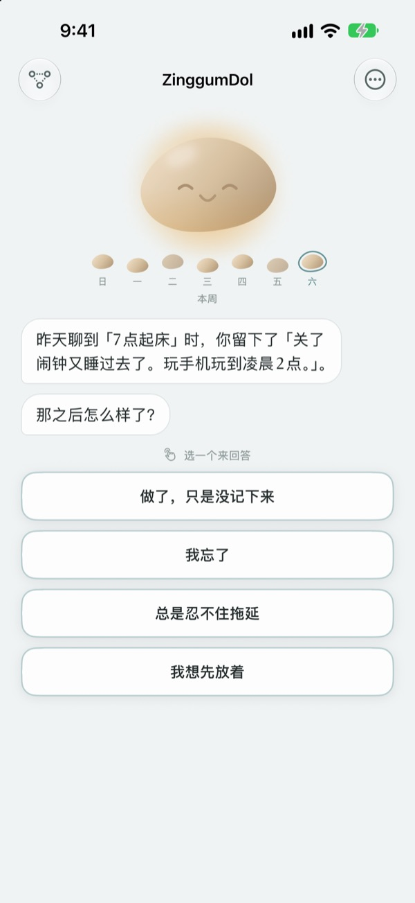
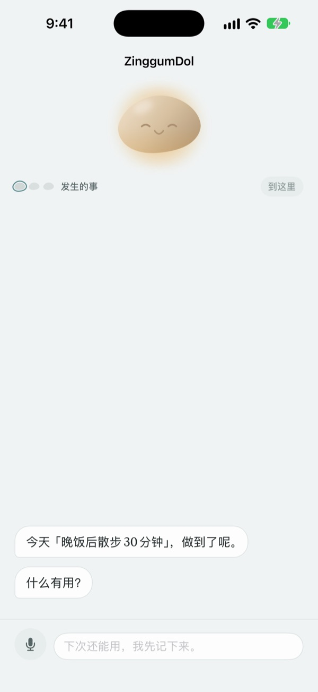
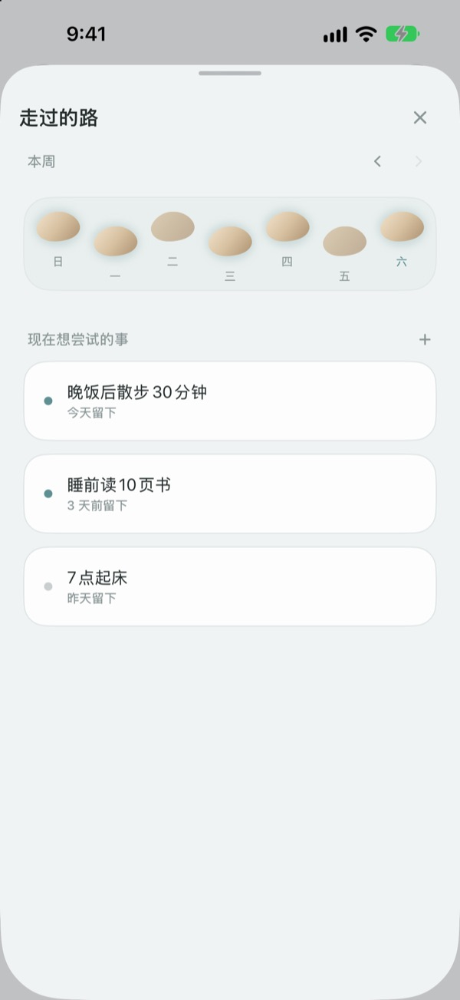
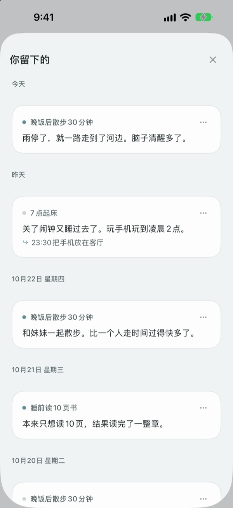

踩空一步，
不代表掉进了小溪
没完成目标的那天，小石子会先开口。它问的是发生了什么，而不是你哪里做错了，再把发生的事和你的心情分开还给你。
聊天、记录和走过的路都免费。无需注册，没有广告。

和小石子聊聊
今天本来打算傍晚去散步，结果没去成。点一个回答或自己写，小石子会像在 App 里一样回应你。
事情没按计划走的那天，你在责怪自己吗？
错过锻炼的晚上，第一个冒出来的念头往往是“我怎么老是这样”。可仔细看看，那天加了班，下了雨，你也累坏了。ZinggumDol 会分开问你那天发生了什么、现在心情如何，再把两者并排摆在你面前。意识到是情况不允许而不是意志不够，明天的一小步就清楚了。
小石子会先开口
定好目标后，小石子会陪你一起看着做到的日子和卡住的日子。错过的那天，它不问“为什么没做”，而是问“发生了什么”；它还记得你上次说的话，会问你后来怎么样了。
不想写字的日子，说出来也可以。语音在设备上识别，录音不会保存。

走过的路，铺成一排踏脚石
一周铺成一排踏脚石。没踩上的那天，石头也照样留着，不会被抹掉。
就算中间空了一两天，也能一眼看出路还在继续。

把留下的话再翻出来看
发生的事、当时的心情、下次想试的事，按日期一条条积累下来。翻到一个同样卡住的日子，就能看出什么方法管用。
还能在主屏幕小组件上看小石子的一句话，在你定好的时间收到回顾今天的提醒。

三步就能开始
- 1
写下一个目标
比如“晚饭后散步30分钟”。
- 2
一天结束时打开 App
小石子会问你今天怎么样。设个提醒就不会忘。
- 3
点选或写下回答
随时都能用
我想先放着结束。
对话会这样进行
- 发生的事
- 只问事实：是什么挡了路
- 心情
- 从五个档里选出你现在的心情
- 回顾
- 小石子把发生的事和你的心情分开说给你听
- 下一步
- 由你自己定一件小事，五分钟就够
- 收尾
- 心情特别低落的日子，它不再追问，只劝你先休息
任何一步都能停下，之前说的话都会保留。
聊天和记录免费，想要更多再用 Pro
免费
- 和小石子的所有对话
- 最多三个目标
- 用说的代替打字
- 走过的路和留下的所有记录
- 主屏幕小组件和每日提醒
- 密码锁
ZinggumDol Pro
- 目标数量不限
- 六种小石子纹理任你选
- 把记录导出为文本文件
一次购买，永久使用。不是订阅。
对话进行中绝不会弹出付款页面。换了设备或重新安装后，请在设置里轻点“恢复购买”。
常见问题
没做到的日子一定要写原因吗？
不用。任何一步都能轻点 我想先放着，对话马上结束。之前说的话会保留，下次可以接着聊。
我其实做了，App 却说我没做。
轻点 做了，只是没记录，小石子会坦然接受，转而问你是什么帮了忙。管用的方法会被记下，下次卡住时它会再拿出来。
我说出来的话去哪儿了？
语音在设备上转成文字，录音不会保存。在支持的设备上，还会把句子整理得更好读，这一步也在设备上完成。
最多能有几个目标？
免费可以有三个。完成的目标在“走过的路”里 放下，就能空出位置。想要更多，需要 ZinggumDol Pro。
ZinggumDol Pro 是订阅吗？
不是。付一次就一直能用。换了设备或重新安装后，请在设置里轻点 恢复购买。
别人能看到我的记录吗？
无需注册，记录只存在你的设备和你自己的 iCloud 里。可以在设置里设置密码锁住 App。你写的内容不会发给开发者。打开 App 的天数这类匿名使用统计也可以在设置里关闭。
怎么改提醒时间？
在设置的 每日提醒 里可以开关并选择时间。
小石子也会提起我做到过的事吗？
会。它记得什么帮到了你，在难熬的日子里会提起你最近做到的事。
怎么删除全部记录？
在设置里轻点 删除所有记录，目标和记录会全部消失且无法恢复，通过 iCloud 连接的其他设备上也会删除。设置和购买会保留。有 Pro 的话，可以先用 导出记录 保存一份。
怎么联系你们？
在 App 设置里点“发送反馈”，或发邮件到下面的地址。
有问题或建议？欢迎发邮件到 leeo@kakao.com。